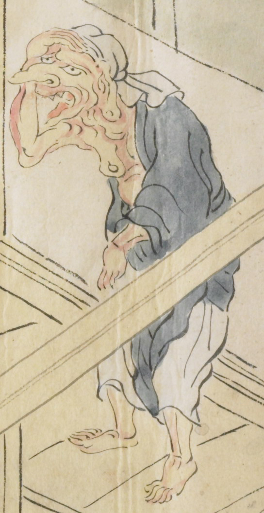

老婆のような鬼。長い鼻をしており、頭には白い布をまいている。口を大きく開き、額に腕をあて、何かを見ているようである。青色の衣服を身にまとい、肩肌脱ぎにしている。
出典：親書誌：U426_nichibunken_0079：酒天童子絵巻；シュテンドウジエマキ／日付：2006／資源識別子：U426_nichibunken_0079_0009_0002
Copyright (c)2010- International Research Center for Japanese Studies, Kyoto, Japan. All rights reserved.